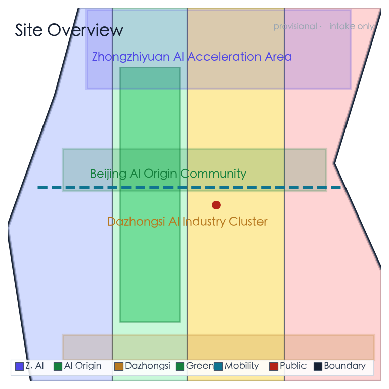
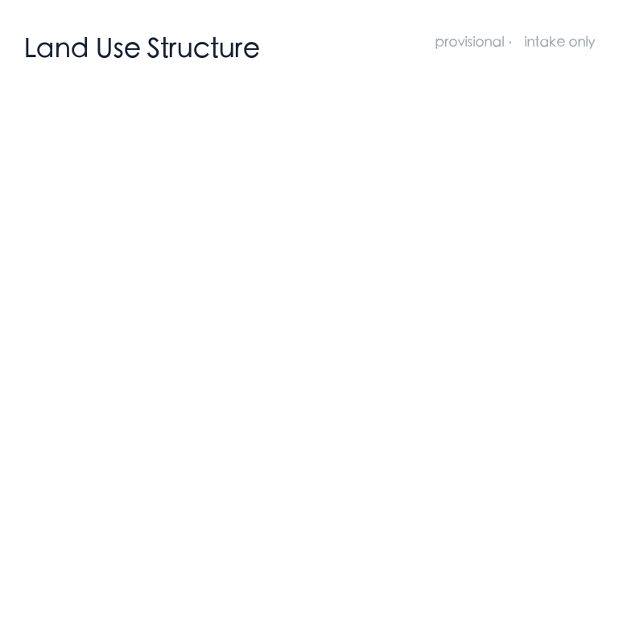
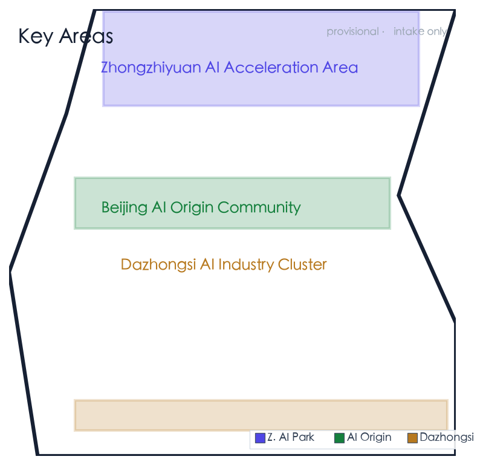
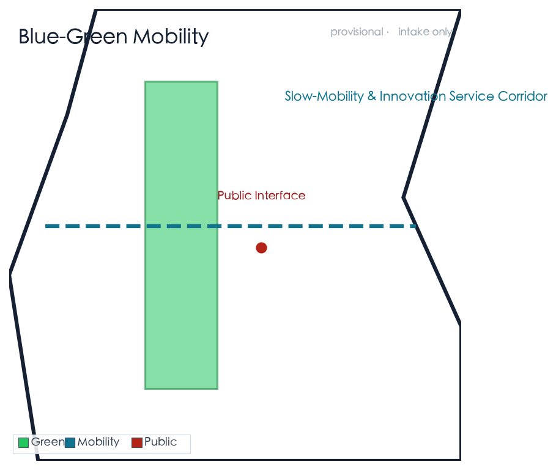
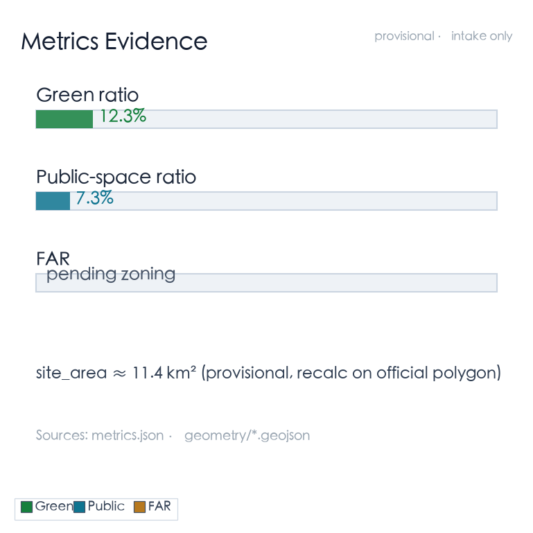

JingZhang Intelligence Loop: An AI Innovation Belt on the Centennial Railway
A formal AI urban design package generated on the basis of a provisional boundary and structured self-check requirements; precision warnings and recalculation requirements are retained, yet organizer data gaps do not block content scoring.
JingZhang Intelligence Loop: An AI Innovation Belt on the Centennial Railway
Design Basis and Source List
This formal proposal takes the "Pre-qualification Announcement for the International Open Call for Urban Design of the Centennial JingZhang AI Innovation Belt" issued by the Haidian Branch of the Beijing Municipal Commission of Planning and Natural Resources as its primary basis, and uses the temporary coarse boundary, key areas, enumerations, indicators, and source inventory registered by the maintainer in brief/site-package/ as machine-readable inputs. Before generating the proposal, the AI agent must read design_brief.json, allowed_design_space.json, sources.json, enums/, ranges/, schemas/, data/source_registry.json, and data/processed/agent_fact_pack.md, and must use project_scope_summary.csv, agent_task_requirements.csv, source_use_matrix.csv, and missing_data_checklist.csv to establish the task list, scope, source use, and gap list. Every design judgment must be decomposed into traceable sources, recalculable indicators, verifiable layers, and manually reviewable assumptions. The announcement requires the proposal to reach the urban design depth of a regulatory detailed plan and the urban design depth of a comprehensive implementation plan; therefore, textual narrative cannot replace GeoJSON, indicator tables, the A3 booklet, the A0 boards, or the HTML electronic presentation.
The proposal is not an independent vision text; it organizes deliverables starting from the announcement, the agent-facing task book, and the site package. This section places only the most critical sources next to each judgment Source Source Depth. The complete source and standard coverage is kept in sources.json, standard_matrix.json, and design_depth_matrix.json, and is not repeated as a machine index in the body text.
The use boundary of the source registry is as follows Source:
data/source_registry.jsonregisters the use boundary of public, clearance, and provisional sources.- Current registration summary: 7 formal-usable sources, 1 background source, 1 provisional-only source.
- The agent must not upgrade background_only or provisional_only sources into an official boundary, statutory regulatory plan, formal scoring basis, or government implementation commitment.
data/processed/agent_fact_pack.md is a reading navigation layer for this proposal, not a new authoritative source Source. It helps the agent organize the three-level scope, three key areas, announcement tasks, agent.1-agent.6, source availability, and missing-data items into a readable proposal; factual judgments still need to return to the registered original materials Source Source, and the complete source relationships are preserved in sources.json.

When the official SITE_BOUNDARY or the three KEY_AREA polygons have not yet been obtained, this scaffold uses brief/site-package/geometry/provisional_boundaries.geojson to generate a temporary formal package. geometry/site_boundary.geojson and geometry/key_areas.geojson in the submission package must both be labeled as provisional_constraint and official_boundary=false, and may only be used for proposal generation, self-check, visualization, and design discussion; they cannot serve as an official redline, approval basis, precise area basis, or statutory control conclusion. This organizer data gap itself does not block content scoring; after replacing with official polygons, the site boundary, key areas, land use, roads, green space, public space, buildings, phasing, and metrics must all be recalculated.
The scoreable status generated by this scaffold is: provisional boundary, retaining precision warnings and awaiting recalculation after official data release; does not block content scoring. Therefore, the spatial structure, scenarios, projects, and indicators in the body are written according to the principle of "discussable, reviewable, and recalculable after replacing the official boundary"; when the official boundary and key-area polygons are updated, the agent must rerun the scaffold, self-check, and drawing/HTML generation, not merely replace a single file.
Boundary interpretation can return to the overall scope layer and area recalculation Spatial data Metric. The three key areas are checked by an independent layer and count indicator Spatial data Metric. This means readers can enter the evidence from the body text without first reading a string of machine identifiers.
Three-Level Scope Framework
The proposal organizes work according to the three levels determined by the announcement: the coordinated research scope focuses on the AI industrial ecosystem, strategic positioning, innovation chain, and future urban form across 43.6 square kilometers; the overall design scope focuses on the 11.4 square kilometer urban area and industrial zones within 1-2 kilometers around the JingZhang Heritage Park, requiring an overall urban renewal framework, industrial spatial layout, transport and municipal support, and urban character control; the key area scope focuses on the three detailed design districts of 368.4 hectares, requiring clear functional uses, building scale, retain-renovate-demolish classification, public space connectivity, and transport organization. The three levels are mapped item by item in compliance_matrix.json, ensuring that announcement items 1.3, 1.4, 1.5 and the mandatory tasks agent.1-agent.6 each have a chapter, layer, indicator, drawing, and HTML evidence.
The depth items of the three-level framework are constrained by Depth and Depth, spatial evidence is based on Spatial data and Spatial data, task basis is based on Standard, and scope indexing is based on the three-level scope table in project_scope_summary.csv within Source.

The three-level tasks are not a collection of disconnected drawings. The coordinated research determines industrial chain and urban form judgments; the overall design translates these judgments into renewal projects, spatial structure, and facility capacity; the key-area detailed design verifies the implementability of specific plots, buildings, transport, public space, and AI application scenarios. When generating the proposal, the agent must first lock the official or provisional boundary and constraints currently adopted by the submission, then generate land use, buildings, roads, green space, public space, phasing, and AI service nodes, and finally recalculate indicators from these layers and explain in the body which conclusions remain constrained by the provisional boundary. Any area, ratio, scale, or project count that cannot be recalculated from structured data must not be written as a formal conclusion.
The overall concept proposed by this proposal is the "JingZhang Intelligence Pulse Symbiosis Belt": taking the JingZhang Heritage Park as the historical and public-space spine, using the three key districts of Zhongzhi Garden, Beijing AI Origin Community, and Dazhongsi as innovation anchors, and taking universities, enterprises, communities, and rail stations as the everyday network, forming a spatial organization of "one belt, three cores, multi-node scenarios, and a blue-green slow-traffic composite loop". Here, "one belt" is not a newly drawn redline, but a translation of the three-level scope in the announcement into a working method; "three cores" correspond to the three key areas; "multi-node scenarios" correspond to operable nodes for AI+ public services, industrial services, and urban life; "composite loop" corresponds to the linkage of slow traffic, green space, public space, and activity routes.
| Level | Design Question | Proposal Response | Data Anchor |
|---|---|---|---|
| Coordinated research scope | How to organize the AI industrial ecosystem and future urban form | Build an innovation chain of "university sourcing - open-source collaboration - enterprise translation - public experience - international dissemination" | compliance_matrix.json, standard_matrix.json |
| Overall design scope | How to map industrial space, urban renewal, transport/municipal systems, and character | Land use, buildings, roads, green space, public space, and phasing layers jointly express the design | Spatial data, Spatial data |
| Key area scope | How to bring the three districts to detailed design depth | Respectively propose positioning, spatial moves, AI scenarios, and implementation dependencies | Spatial data, Spatial data, Spatial data |
Coordinated Research Area: Industry and Future City Research
The core task of the coordinated research scope is to build a world-class AI innovation ecosystem. The proposal should inventory Haidian's universities and research institutes, leading enterprises, computing-algorithm-data elements, incubation platforms, listed companies, unicorns, and sci-tech service resources, and propose a spatial synergy framework for the AI innovation chain, industrial chain, talent chain, and urban service chain. The naming scheme and logo design should serve the overall recognizability of the "Centennial JingZhang Cultural Belt, Urban AI Life Experience Belt, AI Fusion Innovation Belt", not stop at slogans; they should explain the relationship to the industrial ecosystem, public space, and cultural resources. The agent-facing task book also requires responding to the "five major functions" and "three zones, two wings" coordination, forming a naming system, visual identity, overall spatial structure diagram, scenario opening, and operation mechanism that can be further deepened; this section must label these requirements as coming from the agent open-call task with Source and Standard, not from statutory planning control.
Coordinated research does not add pseudo-precise redlines; it connects back to Spatial data, Spatial data, and Depth through the urban character, public space, and building layout coordination required by Standard, explaining that industrial strategy ultimately lands in a visible, reviewable spatial structure.
Future urban form research should answer how artificial intelligence changes work, life, social interaction, learning, transport, and public services. The proposal should translate AI transport systems, continuous green space, innovation service facilities, and an international living-working atmosphere into locatable functional zones, nodes, corridors, and scenarios, rather than vaguely describing a technology vision. The agent should write industrial strategy indicators, AI innovation index, talent density, spatial supply types, and AI+ vertical application key areas into the indicator system, and label which are official, which are design proposals, and which still await calibration against official data. If global AI activities, developer communities, open scenes, or pilgrimage routes are proposed, they should be written as "conceptual proposals / reference schemes / for professional teams to deepen", not as already-determined government activities or implementation arrangements.
Overall Design Area: Urban Renewal and Regulatory-Plan-Level Urban Design
The overall design scope is required to reach the urban design depth of a regulatory detailed plan. The proposal must put forward an overall urban renewal spatial structure, inefficient-space identification, renewal project list, implementation policy recommendations, industrial function ratios, spatial organization models, total building scale, and comprehensive carrying-capacity assessment. geometry/land_use.geojson should fully cover the design boundary without overlap, geometry/buildings.geojson should express updated building footprints or retained building footprints, geometry/roads.geojson should express microcirculation, slow traffic, and rail connectivity, and metrics.json should recalculate core areas, ratios, and layer counts.
This section breaks regulatory-plan-depth content into reviewable objects according to Standard: Spatial data expresses land-use structure, Spatial data expresses building footprints, Spatial data expresses transport organization, Metric is used to recheck building footprint area, and Depth and Depth constrain deliverable depth.
The overall design must also support transport, rail, municipal, and supporting facilities. The proposal should propose spatial layout and implementation paths around rail-station integration, road microcirculation, non-motorized vehicle parking, parking supply, innovation service platforms, talent life services, new infrastructure, distributed energy, and edge computing. Content involving building height, development intensity, road redline, setbacks, and facility standards, if official control conditions are not yet available, should be written as "pending confirmation of formal regulatory-plan conditions", and the agent's inferred values must not be passed off as approved indicators.
Detailed Design of Key Areas
Detailed design of key areas is mandatory. The Zhongzhi Garden AI Independent Innovation Acceleration Zone should propose a detailed plan around the national artificial intelligence platform, full-stack independent innovation, standard setting, safety governance, industrial display, external transport, Qinghe culture, low-carbon green innovation communication environment, and green-space AI scenarios. The Beijing AI Origin Community should propose a detailed plan around campus-adjacent innovation, achievement incubation and translation, talent special zones, open-source systems, brand activities, building retain-renovate-demolish, achievement display and release, residential life support, campus-park slow-traffic connection, and rail-station integration. The Dazhongsi AI Industry Cluster should propose a detailed plan around leading enterprises, intelligent agents, smart terminals, content consumption, data elements, digital assets, commercial services, planned green-space composite use, Dazhongsi Station integration, and four-quadrant pedestrian connectivity at intersections.
Detailed design of the three key areas must reference Spatial data, Spatial data, and Spatial data, and be checked by Depth for whether it reaches the depth of a comprehensive implementation plan. If it only describes "building a demonstration zone" without evidence of function, buildings, transport, public space, and implementation projects, it should be considered incomplete.

The three key areas must appear in geometry/key_areas.geojson. If the repository provides official polygons, they should be used as official_constraint; if official polygons are missing, provisional_constraint may be used temporarily, but the body text, HTML, sources, assumptions, and self-check must explain that it cannot serve as a formal scoring or approval basis. compliance_matrix.json should respectively cover announcement items 1.5.3.1, 1.5.3.2, and 1.5.3.3. Design expression should include functional uses, building scale, building form, retain-renovate-demolish classification, public space system, transport organization, slow-traffic connectivity, and implementation projects. The HTML page should be able to switch views of the three key areas, and the A3 booklet and A0 boards should at least include key-area master plans, local detail drawings, and indicator explanations.
| Key District | Design Positioning | Spatial Move | AI Industry and Operation Scenario | Evidence Reference |
|---|---|---|---|---|
| Zhongzhi Garden AI Independent Innovation Acceleration Zone | Garden-style full-stack independent innovation block | Strengthen the Qinghe interface, industrial display, low-carbon innovation communication, and external transport organization; use green space to carry open testing and standard-governance display | Independent model testing, standard-setting workshops, safety-governance display, low-carbon computing experience | Spatial data, Depth |
| Beijing AI Origin Community | Campus-adjacent achievement translation and talent community | Organize campus-park-block slow-traffic stitching; supplement achievement release, talent services, residential life, and open-source collaboration space | Open-source community, achievement release, talent special-zone services, campus-adjacent incubation | Spatial data, Source |
| Dazhongsi AI Industry Cluster | Urban intelligent economy and international exchange block | Focus on Dazhongsi Station integration, four-quadrant pedestrian connectivity, commercial services, and public environment renewal around key enterprises | Intelligent agent and smart terminal display, content consumption, data elements, and international roadshows | Spatial data, Metric |
AI Innovation Ecosystem, Personas, and AI+ Scenarios
The proposal should establish spatial demand personas for AI talent and enterprises, covering R&D offices, open-source collaboration, achievement release, enterprise services, talent housing, social learning, consumer life, sports and leisure, and international exchange. AI+ scenarios should form industrial development scenarios and AI-empowered urban function scenarios around the directions of transport, services, consumption, medical care, education, law, and life services proposed in the announcement. Each scenario should explain the service target, spatial location, data source, privacy boundary, manual review mechanism, and operating entity.
AI scenarios must land in spatial and governance boundaries: public-space scenarios reference Spatial data, slow-traffic and transport scenarios reference Spatial data, and open-space scenarios reference Spatial data and Metric, Metric. These references let reviewers know that scenarios are not slogans but design objects located in specific layers and indicators. The agent-facing task book requires no fewer than 10 AI scenario cards, no fewer than 3 industrial test-verification scenarios, and no fewer than 5 user personas; the scaffold only provides the structure, and formal participants must write the scenario cards, persona tables, privacy boundaries, manual review, and operating entities into the body text, HTML, A3/A0, and compliance matrix.
| Persona | Typical Need | Spatial Response | Self-Check Boundary |
|---|---|---|---|
| Open-source developer | Release, collaborate, test, community reputation | Origin Community open-source release hall, public code wall, nighttime collaboration space | Do not collect individual behavioral trajectories; activity data is only aggregated statistics |
| Startup team | Low-cost office, computing access, product test field | Zhongzhi Garden shared test field, edge-computing service point, standard-governance consultation | Computing and data services require separate authorization |
| Leading-enterprise visitor | Display, business, international reception, recruitment | Dazhongsi international roadshow living room, rail-station connection, public space around key enterprises | Enterprise logos and cases must be clearance-sourced |
| Nearby resident | Commuting, leisure, community services, low-disturbance renewal | JingZhang Heritage Park slow-traffic loop, embedded community services, nighttime lighting and activity grading | Do not use resident personas for commercial recommendations |
| University faculty and student | Achievement translation, cross-campus collaboration, daily slow traffic | Campus-park slow-traffic stitching, achievement translation station, AI education experience point | Campus data and research achievements require authorization |
To meet the agent taskbook agent.3 requirement for a complete chain of "AI capability - data - space - operation - human fallback - evaluation indicator", the 10 scenario cards are extended with spatial node ID, operating entity, data input/output, human-takeover mechanism, performance indicator, and scenario type; among them, 02, 03, and 08 are explicitly marked as Industrial Test-Verification Scenarios (meeting the >=3 requirement). The spatial landing and operation mechanism of each scenario card also enter compliance_matrix.json and metrics.json, so reviewers can trace card by card.
| Scenario Card | Spatial Node ID | Spatial Carrier | Operating Entity | Data Input | Data/Service Output | Human Takeover | Performance Indicator | Scenario Type |
|---|---|---|---|---|---|---|---|---|
| 01 Open-Source Release Hall | SCN-01-OSREL | Beijing AI Origin Community open-source building | Haidian District S&T Committee + university open-source alliance + venue operator | University/community achievement entries, agenda, open-source license verification | Offline release events, online code wall, roadshow schedule | Agenda double-signed; disputes coordinated by Haidian S&T Committee | Releases/quarter, attendees, PR count | Public service |
| 02 Safety-Governance Sandbox | SCN-02-SAFTY | Zhongzhi Garden evaluation hall | National AI evaluation body (TBC) + Zhongzhi Garden operator | Models/data under test (with authorization), evaluation protocol | Evaluation report, risk-grade certificate, improvement suggestions | Certified evaluator on-site supervision; high-risk termination by operator | Evaluations/year, model coverage, risk findings | Industrial test-verification |
| 03 Edge-Computing Station | SCN-03-EDGE | Overall design scope node (TBC) | Computing service provider (TBD) + venue property | Inference requests, energy-consumption data | Inference results, compute-hour bills, energy report | Abnormal requests manually reviewed; degrade to offline on network loss | Compute-hours/month, PUE, availability | Industrial test-verification |
| 04 AI Slow-Traffic Navigation | SCN-04-SLOW | JingZhang Heritage Park slow-traffic belt | Park management + wayfinding service provider | Low-intrusion sensors (count/speed), public weather | Slow-traffic heatmap, breakpoint tips, detour suggestions | Peak-hour manual dispatch; on-site staff fallback for accessibility | Tips/day, breakpoint-fix closed-loop days | Public service |
| 05 Dazhongsi International Roadshow Living Room | SCN-05-RDSHOW | Dazhongsi international roadshow hall | Property + international event operator | Enterprise roadshow applications, media lists | Roadshow schedule, media coverage, negotiation docking | Foreign-related content review; sensitive topics suspended | Roadshows/year, international media count, deals signed | Operation activity |
| 06 Qinghe Low-Carbon Innovation Corridor | SCN-06-QHLOW | Zhongzhi Garden Qinghe interface | Park + riverway management unit | Stormwater sensors, cycling counts, carbon factors | Public living-room events, cycling/walking index, low-carbon display | Flood season: riverway management unit takes over; on-site safety on incidents | Events/year, cycling growth %, visitors | Public service |
| 07 Campus-Adjacent Achievement Translation Street | SCN-07-XYTR | Beijing AI Origin Community campus-park seam | Haidian District + university tech-transfer office + park operator | University achievement registration, IP evaluation, investment-financing intent | Roadshow, IP registration, incubation docking | Legal/IP by professional firms; financing by licensed institutions | Registrations/year, deals converted, incubation survival rate | Public service |
| 08 Data-Element Reception Hall | SCN-08-DATA | Dazhongsi data space | Data exchange (TBC) + property | Authorized data requests, compliance audit | Data products, compliance report, circulation certificate | Compliance officer review; sensitive fields forcibly desensitized | Data products, transactions, compliance pass rate | Industrial test-verification |
| 09 AI Life-Service Sample Street | SCN-09-LIFE | Community and commercial intersection block | Sub-district office + property + service providers | Resident service requests (desensitized) | Medical/education/legal consultation response | Elderly/disabled/children manually served; non-smart alternatives in parallel | Response time, satisfaction, special-group coverage | Public service |
| 10 Global AI Activity Week Route | SCN-10-WEEK | One-belt public-space system | Haidian District + partner bodies (TBD) | Event registration, venue booking | Route wayfinding, event calendar, media dissemination | Safety filed with public security/fire control; foreign-related events specially approved | Participants, media exposure, international guests | Operation activity |
Multi-Agent Collaboration and AI-Assisted Planning Workflow
To form a verifiable workflow between the scenario cards and the spatial layers, this proposal proposes a 5-step multi-agent collaboration chain: (1) Data-collection agent aggregates public materials, registers sources, and tags provisional boundaries; (2) Spatial-analysis agent reads the GeoJSON layers and recalculates indicators, comparing them with metrics.json; (3) Scenario-generation agent completes each card following the scenario-card template (operating entity / input / output / human takeover / KPI) and writes into compliance_matrix.json; (4) Compliance-verification agent cross-checks source licensing, spatial boundaries, and honesty statements against standard_matrix.json and sources.json; (5) Human planner takes over, making the final decision on all unknown / pending_control fields and high-risk recommendations. The intermediate products of the whole workflow (collection list, indicator recalculation, scenario cards, compliance report) all land in structured files that reviewers can trace file by file; if any agent's output conflicts with a registered source, it must be downgraded to a to-be-confirmed item rather than a "pseudo-precise conclusion".
Xiaoyue River Scenario-Empowerment Wing (one of the two wings)
Following the "coordinated research scope" requirement for "three zones, two wings" coordination, this proposal positions the Xiaoyue River corridor as the Scenario-Empowerment Wing (the other wing is the Zhongguancun Sci-Tech Service Wing), forming a "waterfront + AI experience" movement line complementary to the one-belt-three-cores. Its concrete experience path is, from south to north: the Xiaoyue River and JingZhang Heritage Park south-end confluence (start, with accessibility ramps and water-level tips) -> the Qinghe Low-Carbon Innovation Corridor junction (connecting to Zhongzhi Garden Scenario 06) -> 3 "Xiaoyue River scenario test points" along the route (respectively testing AI water-level warning, low-carbon cycling index, and nighttime safety perception) -> the north-end junction with Haidian Park / university open areas. Five categories of low-intrusion sensors (water level, PM2.5, noise, cycling count, nighttime pedestrian flow) are deployed along the route, and all data enter the compliance-audit channel of the "Data-Element Reception Hall" (Scenario 08); the experience path also serves as the southward extension of "AI Slow-Traffic Navigation" (Scenario 04) and the seasonal sub-venue of the "Global AI Activity Week Route" (Scenario 10). This wing is currently a conceptual proposal / reference scheme, to be deepened after the Xiaoyue River blue line, waterfront walkway property rights, and flood-control conditions are officially confirmed; any flood-safety judgment is taken over by the riverway management unit, and AI must not replace emergency decision-making.
AI governance recommendations generated by the agent must comply with data minimization, public sources, explainability, and manual review principles. Urban intelligent agents can assist in identifying slow-traffic breakpoints, public-space heatmaps, facility maintenance, enterprise service needs, and activity safety risks, but cannot replace planning approval, output unauthorized individual personas, or claim official implementation commitments. All AI scenario nodes should enter structured layers or the compliance matrix so reviewers can see their relationship to industry, space, and public interest.
Land Use, Building Scale, and Retain-Renovate-Demolish Strategy
The land-use plan should be expressed according to public standards such as territorial-space survey, planning, and use-regulation classification, forming complete, closed, and seamless land-use zones. The building plan should distinguish retained, renovated, updated, newly built, or to-be-confirmed objects, and clarify the suggested level of building footprint, function, scale, character, roof, massing, and height control. If current buildings, property rights, regulatory plans, and engineering conditions are missing, the proposal can only propose methods and a to-be-calibrated list, and cannot fabricate retain-renovate-demolish conclusions.
Land-use classification is based on Standard, building height, massing, interface, and character control are managed by Depth, and the retain-renovate-demolish method is managed by Depth. The main evidence for land use and buildings is Spatial data, Spatial data, and Metric.
Building scale and intensity indicators must be consistent with metrics.json and the layers. If total building scale, floor-area ratio, building height, building density, green-space ratio, setbacks, and building control lines lack official conditions, they should be listed as unknown or pending_control in the indicator system, and fixed values must not be used to create a false sense of precision. The A3 booklet should provide a renewal project list and indicator recalculation table, the A0 boards should clearly express the key spatial structure and key districts, and the HTML page should provide linked viewing of indicators and layers.
Transport, Rail, Municipal Infrastructure, and Public Services
The transport plan should respond to the announcement's requirements for rail-station integration, road microcirculation, slow-traffic breakpoints, external transport, parking, non-motorized vehicle parking, and green transport systems. The focus should cover the North Fifth Ring Road, JingZhang Heritage Park cross-ring nodes, Wudaokou, Tsinghua East Road West Exit, Dazhongsi Station, and transport links around key enterprises. Road and slow-traffic layers should remain within the submission boundary and be cross-checked with public space, green space, industrial nodes, and key districts; if the submission boundary is provisional, transport conclusions can only serve as temporary design discussion.
Transport and municipal professional depth are respectively constrained by Depth and Depth; layer evidence references Spatial data, Spatial data, and Spatial data. When road redlines, pipelines, fire protection, and municipal conditions are missing, they should be explained as pending in assumptions, rather than writing strategies as approved conditions.

Municipal and public service facilities should cover AI industrial service facilities, innovation service platforms, talent life service facilities, new infrastructure, distributed energy, edge computing, and integration with traditional municipal facilities. The proposal should explain facility standards, spatial layout, service radius, operation model, and phased implementation logic. When engineering data such as pipelines, energy, drainage, flood control, and fire protection are missing, they should be listed as preconditions for formal deepening.
Blue-Green Network, Public Space, and Urban Character
The blue-green network plan should take the JingZhang Heritage Park vitality belt as the spine, coordinate the Qinghe River, Xiaoyue River, and travel needs of surrounding universities, enterprises, and communities, and propose a north-south and east-west connected pedestrian, cycling, and green-space system. The proposal should identify slow-traffic breakpoints, overpass nodes, southern and northern landscape nodes of the park, and propose parking, sports, innovation communication, technology testing, application display, and public service composite-use strategies.
Blue-green public space is cross-checked by design depth items and green-space and public-space layers Depth Spatial data Spatial data. The design significance of green-space and public-space ratios is explained in the body, and complete recalculation is saved in metrics.json; the coordination of urban character, public space, and building control returns to the professional standards matrix Standard.
The urban character plan should integrate the historical culture of the JingZhang Railway, the innovation culture of Zhongguancun, and the AI innovation culture, utilize cultural resources such as Tsinghua Garden Railway Station and Beijing Film Academy, and propose urban keynote, building character, roof form, massing, interface, and public art guidance. The agent should also propose signage, cultural symbols, international dissemination narratives, AI pilgrimage landmarks, contribution walls, or honor display systems, but all brands, fonts, images, portraits, and enterprise logos must have clearance-sourced origins. Character control should distinguish official control, design proposals, and pending conditions, and pseudo-precise control lines must not be given without cultural-heritage or regulatory-plan basis.
Brand Visual System and Cultural Wayfinding
Following up on the "Urban Character" section's commitment to signage, cultural symbols, AI pilgrimage landmarks, contribution walls, and honor display systems, this section presents a brand visual system that is original, clearance-cleared, and replicable, ensuring that all visual output can shape a unified identity for "JingZhang Intelligence Loop" without introducing any unauthorized use of enterprises, institutions, individual portraits, or third-party brands. The system consists of six sub-systems; each sub-system produces one bilingual vector figure (PNG + SVG), totalling 12 figure files:
| Sub-system | Visual Carrier | Core Commitment | Figure Files |
|---|---|---|---|
| 01 Brand Identity | Ellipse orbit around the character "京" + 5-color palette + bilingual type stack | Logo and palette are original; all fonts are open-license or system-bundled | assets/figures/brand-identity.png / .en.png |
| 02 AI Innovation Ecosystem | University sourcing → open-source collaboration → enterprise translation → public experience → international dissemination (5-link closed loop) | Driven by the operating entity and annual activity system (see Renewal chapter) | assets/figures/ecosystem-map.png / .en.png |
| 03 Global AI City References | Helsinki / Amsterdam / Barcelona / Seoul / Montreal / Singapore (6 cities) | Public-reference material only; no government commitment or implementation arrangement | assets/figures/global-ai-cases.png / .en.png |
| 04 Three AI Pilgrimage Landmarks | Open-source release hall / international roadshow hall / Global AI Activity Week landmark (3 sites) | Conceptual proposal / reference scheme; not a confirmed government construction arrangement | assets/figures/ai-landmarks.png / .en.png |
| 05 Honor System + Component Library | 4-level contribution wall + 5 standardized components (bench / signage / charging post / computing kiosk / slow-traffic marker) | Standardized, replicable, low-intrusion; integrated into A3 booklet and A0 boards | assets/figures/honor-component-library.png / .en.png |
| 06 Cultural Wayfinding + Annual Operations | 4 cultural symbols (railway tie texture / AI node / railway arc / green loop) + Q1–Q4 seasonal rhythm | Symbols derived from JingZhang Railway and AI imagery; unified across signage and APP | assets/figures/wayfinding-ops.png / .en.png |


Logo and palette. The logo uses an elliptical orbit around the character "京" with four star nodes, symbolizing the centennial JingZhang Railway arc and the "ring + node" relationship of AI innovation nodes. The five-color palette (Jing-Blue / Loop-Green / Gold / Neutrals / Ink) is bilingually named to support both reviewers and future construction teams. The palette and logo contain no unauthorized elements from any enterprise, institution, artist, or third-party brand.
Type stack. Headings use PingFang SC / Microsoft YaHei / Noto Sans CJK SC (system fonts on macOS / Windows / Linux, with explicit fallback order); body text uses Source Han Sans / LXGW WenKai (both OFL-licensed open-source fonts, allowing commercial use, modification, without attribution requirement). The fallback order is declared in visual/index.html SVG text nodes and PDFs, ensuring correct rendering on any reviewer device.
Originality and clearance statement. All figures, logos, palette, type stack, and the "京" character composition in this section are original to this proposal or use open-source / public-domain material; they contain no enterprise LOGOs, individual portraits, unauthorized photography, or third-party brand symbols. "Global AI City References" cites public materials (URLs listed at the bottom of each figure: hel.fi, amsterdam.nl, barcelona.cat, data.seoul.go.kr, montrealdeclaration-responsibleai.com, smartnation.gov.sg, etc.) and does not constitute any government commitment or implementation arrangement. "Three AI Pilgrimage Landmarks" are conceptual proposals / reference schemes to be deepened by professional teams; they are not confirmed government construction arrangements. Each brand figure carries a footer disclaimer ("not a government commitment" or "not a confirmed government construction arrangement"), consistent with the Item 6 "Risk, Compliance, and Matrix Honesty" principle. The complete copyright and clearance statement is in the copyrights/ directory and copyrights/copyright_statement.md.
Relationship to operations and implementation. The brand visual system serves as the visual anchor for the "annual activity system" and "operating entity" commitments in the Renewal and Implementation chapter: the "contribution wall / digital badge" of the honor system supports incentives for open-source contributors and testers; the "Q1 release season / Q2 roadshow season / Q3 test season / Q4 activity week" of cultural wayfinding matches the annual operations rhythm; the three AI pilgrimage landmarks correspond to the "Global AI Activity Week Route" scenario card. Any brand use must remain within the boundaries of the "annual activity system" and "operating entity" and must not be unilaterally extended to unauthorized commercial signage.
Global AI Innovation City References (6)
Responding to the "five to eight global AI innovation city cases" requirement in the agent taskbook (agent.2), and following the global-vision commitments of the "Urban Character" and "Brand Visual System" sections, this section lists six international city references with publicly available sources. Each case is used only as conceptual reference and operational-mechanism comparison; none of them constitutes a government commitment or implementation arrangement. The overview figure is assets/figures/global-ai-cases.png.
| City | One-line Positioning | Lesson Borrowed (Mechanism / Scenario) | Public Source |
|---|---|---|---|
| Helsinki | Open data + AI experimentation city | Data-element governance -> Scenario card 08 Data-Element Reception Hall | hel.fi |
| Amsterdam | City AI agreement + fair algorithms | Algorithm-fairness audit -> AI slow-traffic navigation accessibility and fairness boundary | amsterdam.nl |
| Barcelona | Superblocks + public-space digital twin | Blue-green slow-traffic composite loop + public-space digital-twin prototype | barcelona.cat |
| Seoul | Smart mobility + global AI events | AI slow-traffic navigation + Global AI Activity Week route | data.seoul.go.kr |
| Montreal | Birthplace of the Responsible AI declaration | Safety-governance sandbox responsibility boundary + human takeover | montrealdeclaration-responsibleai.com |
| Singapore | Smart Nation + edge computing | Edge-computing station + national/city-level platform interface | smartnation.gov.sg |
Borrowing-mode statement. These six cases are conceptual references for the operational mechanism and scenario design of this proposal, and do not replicate any city's statutory plan, built form, or government brand. All borrowings return to specific spatial nodes (blue-green composite loop, JingZhang Heritage Park slow-traffic belt), AI scenario cards (01-10), or operational mechanisms (annual activity system, Q1-Q4 cadence) of this proposal, and are not extrapolated into an overall plan clone. The public sources are consistent with sources.json; reviewers should consult that file to verify accessibility and licensing before citing.
Renewal Projects, Implementation Policy, and Phasing
The implementation plan should form a reviewable renewal project list, explaining project location, type, function, responsible entity, dependencies, implementation stage, risks, and evaluation indicators. Policy recommendations should cover urban renewal coordinated implementation, spatial supply, operation mechanism, industrial services, public participation, data governance, and property-rights coordination. geometry/phasing.geojson should express phasing scope, and compliance_matrix.json should link each task to phasing and drawings.
The project list and phasing depth are managed by Depth and Depth, and phasing spatial evidence is Spatial data. If property rights, funding, implementation entities, and approval paths are absent, the proposal must write them as implementation risks rather than commitments to deliver.
| Project ID | Project Name | Type | Main Dependencies | Responsible Entity | Current Deliverable (Near-term) | Phase Gate | Acceptance Indicator | Exit Mechanism | Evidence Reference |
|---|---|---|---|---|---|---|---|---|---|
| JZ-01 | JingZhang Heritage Park slow-traffic breakpoint stitching | Public space / transport | Road redline, under-bridge space, transport organization recheck | Haidian District Urban Management Committee + JingZhang Park Management + local sub-district | Wayfinding completion + under-bridge space pilot signage | Road redline + under-bridge property-rights confirmation | Breakpoint-fix closed-loop days <= 7 | If under-bridge space cannot be opened, reroute detour | Spatial data |
| JZ-02 | Zhongzhi Garden Qinghe innovation interface | Blue-green space / industrial display | River blue line, ecology and flood-control conditions | Zhongzhi Garden operator + Haidian District Water Bureau | Riverside walkway signage + stormwater sensor pilot | River blue line + flood-control assessment | Flood-season safety drill passed | If flood control fails the standard, downgrade to landside display | Spatial data |
| JZ-03 | Origin Community campus-adjacent achievement translation street | Urban renewal / industrial services | Campus boundary, property rights, ground-floor uses | Haidian District + university tech-transfer office + local sub-district | Ground-floor use guideline + one demonstration block | Campus boundary + property-rights confirmation | Signed-conversion count >= baseline | If ground-floor uses cannot be reorganized, switch to online services | Spatial data |
| JZ-04 | Dazhongsi Station four-quadrant pedestrian connectivity | Rail integration / slow traffic | Rail station, road intersection, municipal pipelines | Beijing MTR + local sub-district + municipal authority | Crossing-facility siting study + temporary wayfinding | Rail + road + municipal-pipeline integrated review | Four-quadrant pedestrian connectivity 100% | If pipelines are too complex, implement in phases | Spatial data |
| JZ-05 | AI public services and edge-computing nodes | New infrastructure / public services | Energy, computing, safety, and operating entity | Computing service provider (TBD) + venue property + Haidian District | One pilot station + energy PUE baseline | Energy + computing + safety + operating entity | PUE <= 1.3, availability >= 99% | If energy target fails, reduce scale | Spatial data |
| JZ-06 | Global AI Activity Week public route | Operation / branding | Public space permits, activity safety, copyright clearance | Haidian District + partner bodies | Wayfinding + one trial run | Public space permit + safety + clearance | Participants, media exposure, zero safety incidents | If clearance fails, downgrade to internal roadshow | Spatial data |
Implementation Phasing (Near-term / Mid-term / Long-term)
Phasing is strictly distinguished from the 100-day open-call design cycle: the open-call cycle is the time requirement for submitting deliverables, while implementation phasing is the advancement path for urban renewal and project construction. This proposal assigns the six JZ projects to three time bands and labels the boundary between what can be initiated with lightweight measures and what must await preconditions:
| Time band | Scope | Initiated projects | Initiation conditions | Note |
|---|---|---|---|---|
| Near-term 0-12 months | Lightweight pilots | JZ-01 wayfinding/under-bridge pilot, JZ-02 riverside signage/stormwater sensor, JZ-06 trial run | No regulatory-plan adjustment required; mainly operation, wayfinding, and sensing | Led by local sub-district + park management; can start immediately after the open call |
| Mid-term 1-3 years | Main renewal | JZ-03 ground-floor uses, JZ-04 crossing facility, JZ-05 edge-computing station | Requires official regulatory plan, road redline, municipal and energy conditions | In parallel with official regulatory-plan compilation and municipal overhaul |
| Long-term 3-10 years | Governance framework | Annual activity system matured, attraction-conversion chain running, international dissemination mechanism | Requires annual evaluation and strategy iteration | Haidian District leads the annual review and strategy-update mechanism |
Annual Activity System (Q1-Q4 cadence)
Following the "Brand Visual System" chapter's commitment to an "annual activity system", this proposal provides the Q1-Q4 quarterly operational cadence, mapping scenario cards, operating entities, and conversion paths. The annual activities keep a conceptual reference relationship with the "Global AI Innovation City References" six cases and do not replicate their government programs:
| Quarter | Theme | Core scenarios | Operating entity | Conversion path | Risk boundary |
|---|---|---|---|---|---|
| Q1 (Jan-Mar) | Release season | Scenario 01 Open-Source Release Hall | Haidian District S&T Committee + university open-source alliance | Achievement release -> media coverage -> university PR inclusion | No individual behavior tracking; agenda double-signed |
| Q2 (Apr-Jun) | Roadshow season | Scenario 05 Dazhongsi International Roadshow Living Room + Scenario 07 Campus-Adjacent Achievement Translation Street | Property + international event operator + university tech-transfer office | Roadshow -> investment-financing docking -> signed landing | Foreign-related content review; financing by licensed institutions |
| Q3 (Jul-Sep) | Test season | Scenario 02 Safety-Governance Sandbox + Scenario 03 Edge-Computing Station + Scenario 08 Data-Element Reception Hall | National AI evaluation body (TBC) + computing service provider + data exchange | Model evaluation -> risk certificate -> compute-hour bill -> data product | High-risk termination by operator; sensitive fields desensitized |
| Q4 (Oct-Dec) | Activity week | Scenario 10 Global AI Activity Week Route | Haidian District + partner bodies | Route wayfinding -> media dissemination -> international guest invitation | Safety filed with public security/fire control; foreign-related events specially approved |
Developer Community, Scenario Opening, and Attraction-Conversion Chain
Developer community mechanism. Jointly led by Haidian District S&T Committee and the university open-source alliance, with open-source license verification, contribution wall, digital badge, and PR/Issue counting incentives; community activity data are used only for aggregate statistics, without individual behavior tracking and without commercial recommendation. Community operations dock directly with Scenario 01 Open-Source Release Hall and the "red-team testing" channel of Scenario 02 Safety-Governance Sandbox.
Scenario opening rules. Three-tier management: (a) Industrial test-verification scenarios (02, 03, 08) require authorization application + compliance audit, opening through an "apply-audit-sandbox-exit" process; (b) Public service scenarios (01, 04, 06, 07, 09) are free to the public with desensitized aggregate data release; (c) Operation activity scenarios (05, 10) require public security/fire control filing and foreign-related special approval, with sensitive topics suspended. All scenario "apply-audit-open" records enter the operation sub-table of compliance_matrix.json, traceable item by item.
Attraction-conversion chain. Jointly built by Haidian District, university tech-transfer offices, and licensed investment institutions, with the path "university achievement registration -> IP evaluation -> incubation docking -> investment-financing -> signed landing", corresponding to the legal/IP/financing service nodes of Scenario 07 Campus-Adjacent Achievement Translation Street; each step is operated by the corresponding licensed institution, and unlicensed institutions are not allowed to intervene in the financing step.
International dissemination. Establishes an information-exchange and mutual-invitation mechanism with the "Global AI Innovation City References" six cases; media coverage and multilingual wayfinding of the annual activity week are uniformly released by Haidian District and partner bodies; any external release must return to sources.json to verify accessibility and licensing.
Public Interest and Inclusivity
Following the scenario cards' requirements for "human takeover" and "special groups", and responding to the public_compliance and vulnerable-group inclusiveness requirements of the agent taskbook, this chapter gives the independent needs and risk responses of five vulnerable groups, the three-piece accessibility set of AI slow-traffic navigation, and the public-participation closed loop.
Vulnerable-Group Needs and Risk Responses
| Group | Typical Needs | Space / Service Response | Risk and Boundary | Self-check / Fallback |
|---|---|---|---|---|
| Elderly (>=60) | Low-intensity walking, clear wayfinding, nearby services, emergency help | Gentle-slope priority on JingZhang Heritage Park slow-traffic belt + rest seats along the route + embedded community services | Nighttime solo travel safety; no behavioral-profile collection | On-site security/volunteer patrol; one-button property call |
| Disabled (visual / hearing / mobility) | Accessible path, tactile/auditory cues, reachability | Accessibility ramps, tactile paving, vibration indicators, caption/sign-language APP, bookable on-site assistance | Breakpoint information must be truthful; no false "open" reporting | Disabled-person representatives participate in wayfinding acceptance |
| Children (<=14) | Safe school commute, parent visibility, slow-traffic priority | School-zone speed limits, AI slow-traffic navigation child mode, parent-side location sharing (desensitized) | No precise child trajectory collection; aggregate only | Parent authorization; school + sub-district double-sign |
| Low-digital-skill population | Non-smart alternative channels, in-person consultation, paper wayfinding | Community service points with face-to-face consultation, paper maps, manual windows | No mandatory APP use for public services | Offline channels retained for all public services |
| Night workers (22:00-06:00) | Safe night walking, low-disturbance lighting, emergency response | Tiered smart lighting, nighttime safety-perception sensors (Scenario 06), 24h emergency contact | Noise-disturbance boundary; no full-time high-frequency collection | Property + sub-district emergency response; noise-complaint closed loop |
AI Slow-Traffic Navigation Accessibility Three-Piece Set
The "on-site staff fallback" of Scenario 04 AI Slow-Traffic Navigation is operationalized in this chapter as a three-piece set, ensuring that accessibility, aging-friendliness, and non-smart-device alternative channels exist in parallel:
1. Accessible path. AI navigation on the JingZhang Heritage Park slow-traffic belt and the Xiaoyue River Scenario-Empowerment Wing must output an "accessibility-priority" route (including slope, tactile paving, crossing acoustic signals, rest points), and give a "last 100 meters on-site guidance" hint at breakpoints; any AI-marked "open" path must be verified on-site by disabled-person representatives before release. 2. On-site human service. A service point (also serving as visitor center / property post) is set every 500 meters along the slow-traffic belt, providing wayfinding, wheelchairs, emergency calls, and human explanation; volunteers are added in peak hours; on-site service records are desensitized aggregates only. 3. Non-smart alternative channels. All AI navigation conclusions must be accompanied by three non-smart channels: paper wayfinding maps, community broadcast, and hotlines; the elderly and low-digital-skill population can go directly to a service point for routes; "please scan the code" must not be the only way to obtain information.
Public-Participation Closed Loop
Public interest and inclusiveness require a participation closed loop that can be supervised and corrected. This proposal proposes a 4-step participation chain:
1. Participation channels. Establish a "JingZhang Intelligence Loop Public Participation" online platform (desensitized aggregates) + sub-district offline forums + monthly scenario-card open days (Scenarios 02/03/08 test season opens public observation simultaneously). 2. Feedback reception. All feedback enters the public_feedback sub-table of compliance_matrix.json, registered by the four-tuple "scenario-feedback-responsible party-response deadline"; response deadline <= 15 days. 3. Correction mechanism. If feedback involves safety, privacy, or discrimination risks, Haidian District + independent advisors evaluate within 7 days and decide whether to suspend the scenario node; the evaluation record is made public. 4. Annual review. Public participation data and scenario KPIs jointly enter the Q4 review of the annual activity system, and the annual participation report and improvement list are publicly released.
Metrics, Area Recalculation, and Compliance Matrix
The indicator system should at least include overall design scope area, key area area, green-space and public-space ratios, building footprint, renewal project count, AI scenario nodes, slow-traffic connectivity indicators, industrial-space indicators, talent-service indicators, and self-check status. All known indicators must be recalculable from GeoJSON or credible sources; unknown indicators must give reasons and preconditions for formal submission. The results of scripts/spatial_review.py and scripts/visual_review.py are important evidence for formal self-check.
Indicator recalculation follows unified design-depth requirements Depth. The body focuses on explaining the design meaning of indicators, such as how the overall scope constrains spatial allocation and how blue-green and public-space ratios support daily communication; complete values, formulas, source files, and confidence levels are saved in metrics.json. Example key indicators can be rechecked from overall scope and green-space data Metric Spatial data.

The compliance matrix is the master control file for task responsiveness. Every announcement task and agent_taskbook task must correspond to a report chapter, layer, indicator, drawing, HTML page, source, assumption, and self-check item. Failure to cover any mandatory task under announcement 1.3, 1.4, 1.5 or agent.1-agent.6 means the proposal may not enter formal professional scoring.
For formal deepening, the agent should also classify each indicator into three categories: the first category is spatial indicators directly recalculable from submitted geometry, such as boundary area, green-space ratio, public-space ratio, building footprint area, and phasing area; the second category is control indicators requiring support from official regulatory plans or task-book attachments, such as floor-area ratio, building height, building density, setbacks, road redlines, and facility standards; the third category is performance indicators requiring continuous calibration with operation or industry data, such as AI innovation index, talent density, industrial service satisfaction, slow-traffic accessibility, activity participation, and scenario usage frequency. The three categories should respectively enter metrics.json, assumptions.json, and compliance_matrix.json, avoiding the mistake of writing operational visions as approved planning conditions.
Risk, Copyright, and Compliance
Bilingual content is required. The primary proposal file may use Chinese or English, but a complete对照译文 must be provided through proposal.en.md or proposal.zh.md; A3/A0, HTML, and text-bearing drawings must also provide corresponding language copies, and the event's recommended translations in docs/terminology-glossary.md should be preferred. A v2 package missing any required translation, language mapping, or valid file will be blocked by finalize and CI. All images, drawings, icons, data, and code assets must explain source, license, and authorization status in sources.json or report/copyright_statement.md. HTML pages must not load remote scripts, remote map tiles, remote fonts, iframes, forms, or external APIs, and must not track reviewer behavior.
Risk and missing-data lists are cross-checked by risk depth items, constraint layers, and the site package Depth Spatial data Source. Gaps in official boundary, key area, regulatory plan, roads, plots, buildings, municipal systems, cultural heritage, and public services listed in missing_data_checklist.csv must enter assumptions.json, self-check, and the body risk chapter. Any conclusion lacking official regulatory plan, road redline, property rights, municipal, fire protection, or cultural-heritage conditions must be downgraded to a pending item; complete professional checking is saved in the standards matrix.
This proposal does not claim official approval, approved regulatory plan, final land property rights, final construction scale, or guaranteed implementation. The AI agent is responsible for facts, sources, copyright, spatial data, indicators, and expression; maintainers and professional reviewers may require rework or rejection based on self-check results, spatial review, and compliance-matrix requirements.
References
- brief/public-brief.md
- brief/site-package/design_brief.json
- brief/site-package/allowed_design_space.json
- brief/site-package/enums/
- brief/site-package/ranges/planning_limits.json
- data/processed/agent_fact_pack.md
- data/processed/project_scope_summary.csv
- data/processed/agent_task_requirements.csv
- data/processed/source_use_matrix.csv
- data/processed/missing_data_checklist.csv
- Complete machine index: see
sources.json,metrics.json,compliance_matrix.json,standard_matrix.json, anddesign_depth_matrix.json - This section's bibliography entry is based on site-package registration; complete sources and licenses are in the structured source list Source